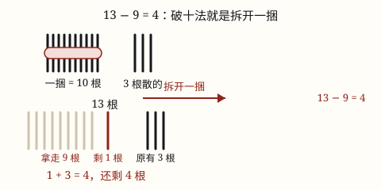
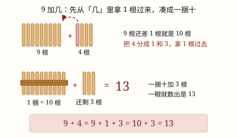

20 以内的进位加法与退位减法
9 加几，先拿 1 个把 9 凑成 10，再把剩下的加上去。9 + 4 就是 10 + 3 = 13。
| 所属主题 | 数的运算 |
|---|---|
| 所属模块 | 数与代数 |
| 课标学段 | 第一学段（1~2年级） |
| 前置知识 | 5 以内数的加法与减法 |
| 核心素养 | 数感运算能力推理意识 |
教材定位
人民教育出版社《2024年版》
对应一上第 5 单元「20 以内的进位加法」：9 加几与凑十法。；对应一下第 2 单元「20 以内的退位减法」：十几减 9 与破十法、想加算减。；对应一下第 2 单元「20 以内的退位减法」：十几减 8、7、6 与十几减 5、4、3、2 的多种算法。
课标要求
| 数与代数·数与运算 | 在具体情境中，了解四则运算的意义，感悟运算之间的关系（例3）。 印刷第 18 页 行为动词：了解 |
|---|---|
| 数与代数·数与运算 | 探索加法和减法的算理与算法，会整数加减法。 印刷第 18 页 行为动词：掌握 |
说明
9 再添上 1 就是 10。10 是个整整齐齐的数，一眼就能数清楚，算起来也最省事。
所以算 9 加几的时候，先从「几」里面拿出 1 个给 9，把 9 凑成 10，再把剩下的加上去。这个办法叫凑十法。
比如 9 + 4：把 4 分成 1 和 3，9 加 1 凑成 10，10 再加 3 是 13。写成一串就是 9 + 4 = 10 + 3 = 13。
9 加几的答案都是十几，十位上一定是 1。9 + 2 = 11、9 + 5 = 14、9 + 9 = 18。
（十几减 9 与破十法）
十几减 9，就是 13 - 9、15 - 9 这样的题。先看个位：13 的个位是 3，3 不够减 9。这种个位不够减的减法，叫退位减法。
破十法是这样做的：把 13 拆成 10 和 3。先用 10 去减 9，得 1。再把 1 和剩下的 3 合起来，1 + 3 = 4。所以 13 - 9 = 4。
「破十」就是把那个十拆开、打散。十一打散，个位这边就够减了。十几减 9 的每一题，都走这三步：拆十、减九、加剩数。
（20 以内退位减法的多种算法）
20 以内的退位减法，不只有一条路。拿 15 - 9 来看：个位 5 不够减 9，下面三条路都能走到 6。
破十法：把 15 拆成 10 和 5。先算 10 - 9 = 1，再算 1 + 5 = 6。先破开十，再合回来。
平十法：把 9 拆成 5 和 4。先算 15 - 5 = 10，把个位减平到十；再算 10 - 4 = 6。分两次减，每次都够减。
想加算减：反过来想「9 加几等于 15」。9 + 6 = 15，所以 15 - 9 = 6。减法倒着问，就变回你最熟的加法。
使用场景
分糖果：你有 9 颗糖，妈妈又给了 5 颗，合起来一共几颗？
文具盒：笔筒里有 9 支铅笔，又插进去 3 支，现在有几支？
操场：操场上有 9 个小朋友在跳绳，又来了 6 个，一共有几个小朋友？
吃水果：昨天吃了 9 颗葡萄，今天吃了 4 颗，两天一共吃了几颗？
买文具：一本练习本 9 元、一支签字笔 3 元，两样一共多少元？
（十几减 9 与破十法）
买文具找零：一支自动铅笔 9 元，你付了 13 元，收银员要找你几元？算的就是 13 - 9。
分绘本：图书角有 15 本绘本，借走 9 本，还剩几本？个位 5 不够减 9，用破十法正合适。
上学路上：从家到学校要走 18 分钟，走了 9 分钟，还剩几分钟？边走边算，18 - 9 也能在心里破十。
分水果：家里有 14 个橘子，送人 9 个。个位 4 不够减 9，又是破十法出场的时候。
（20 以内退位减法的多种算法）
挑顺手的算法：口算时哪条路你最熟、最不容易错，就用哪条。多数同学最后都爱想加算减，因为 9 加几背得最牢。
检查答案：用一种方法算完，换另一种再算一遍。两条路得数一样，才放心交卷。
买东西找零：付 14 元买 8 元的东西，想加算减最快：「8 加 6 是 14，找 6 元」，一口报出。
看懂加减是一家：想加算减让你亲眼看到，减法就是加法的「倒放」。加法和减法不是两件事，是同一件事的正反面。
注意点
看到 9 就想到还差 1。第一步永远是凑十：9 加 1 得 10。
把另一个数分成 1 和几。9 + 6 里，6 要分成 1 和 5，不是分成 2 和 4。
凑成 10 以后别忘了加剩下的。很多小朋友算到 10 就停笔，答案写成了 10。
结果一定是十几。9 加一个比 1 大的数，答案在 11 到 18 之间，不可能是 9 或 10。
个位上的数是「几」减 1。9 + 7 的个位是 6，不是 7——因为 1 已经被借去凑十了。
（十几减 9 与破十法）
先看个位够不够。拿到题先比一比：个位比 9 小，才用破十法。像 19 - 9，个位 9 够减，直接减就行，不用拆。
拆完别忘了加回剩下的几。13 - 9 里 10 - 9 = 1 只是第一步，1 还要加回个位原有的 3，得数才是 4。
不能倒着减。个位 3 不够减 9，有同学就反算成 9 - 3 = 6。不行！减法永远是从总数里拿走，方向不能倒。
减 9 不是减 10。有同学图快，把 13 - 9 直接当成 13 - 10 = 3。差了 1，答案就错了。
（20 以内退位减法的多种算法）
平十法拆的是减数。把 9 拆成 5 和 4，是为了先减 5 把 15 减到 10。别拆反方向：先减 4 得 11，11 减 5 虽然也对，却绕远了，还容易出错。
想加算减别想错加法。把 9 + 6 = 15 记成 9 + 5 = 15，得数就跟着错。加法不牢，先回加法表补一补。
得数必须相同。三种方法算同一题，如果一个得 6、一个得 5，肯定有一步错了。方法可以不同，答案只有一个。
先亲手做过再选。三种方法都要用小棒摆过、拆数试过，明白了再挑顺手的。只背一种、不明道理，数一大就露馅。

图 1：13 根小棒拆开一捆后，从 10 根里拿走 9 根，剩下的 1 根和原有 3 根合起来
为什么是这样

图 1：凑十法就是先从「几」里拿 1 根把 9 凑成一捆十，再把剩下的 3 根加上去
算理推导
摆小棒：左边摆 9 根，右边摆 4 根。这就是 9 + 4。
数一数左边：9 根再加上 1 根，正好是 10 根。10 根可以捆成一捆——捆好以后不用一根一根数，一眼就知道是 10。
从右边的 4 根里拿 1 根到左边，把这 10 根捆成一捆。右边还剩 3 根。这一步就是「把 4 分成 1 和 3」。
现在桌上是一捆（10 根）加 3 根，一共 13 根。写成算式：9 + 4 = 9 + 1 + 3 = 10 + 3 = 13。
为什么非要凑成十？因为我们数小棒就是十个十个地捆的，一捆十最好数。把没学过的 9 + 4 变成早就熟悉的 10 + 3，就不用再掰手指了。
再算一次 9 + 7：把 7 分成 1 和 6，9 加 1 凑成 10，10 加 6 是 16。你会发现，每次都是「先凑成一捆，再数剩下几根」。
（十几减 9 与破十法）
拿小棒摆出 13：一捆（10 根）加 3 根散的。
要拿走 9 根。散的只有 3 根，不够拿——这就是「个位不够减」在小棒上的样子。
把那一捆拆开。「破十」拆的就是这捆。10 根散出来，从里面拿走 9 根，还剩 1 根。
剩下的 1 根和原来那 3 根合起来：1 + 3 = 4。这四步就是 13 - 9 = 4 的全部来历。
（20 以内退位减法的多种算法）
破十法做 15 - 9：小棒摆 15（一捆加 5 根）。散的 5 根不够减 9，拆捆：10 - 9 = 1，1 + 5 = 6。
平十法做同一题：还是 15 根。先拿走 5 根散的，15 - 5 = 10，正好剩一捆；再从这捆 10 根里拿走 4 根，10 - 4 = 6。减数 9 被拆成「先拿 5、再拿 4」，每次都够减。
想加算减做同一题：反过来问「9 加几等于 15」。从 9 往后数：10、11、12、13、14、15，一共数了 6 步，所以加的数是 6，15 - 9 = 6。
三条路的动作不一样，但从同一堆 15 根小棒里拿走的都是 9 根，剩下的都是 6 根。得数相同不是巧合——它们干的是同一件事。
动手实验
拿 20 根小棒（或者 20 根吸管）和几根皮筋。先摆 9 + 5：左边 9 根、右边 5 根，从右边拿 1 根到左边，用皮筋捆成一捆，数一数一捆加 4 根是多少。再试 9 + 2、9 + 7、9 + 9，每次都先捆出一捆十。做完把答案排在一起看：11、14、16、18——个位上的数总是比「几」少 1。 （十几减 9 与破十法） 用小棒把 11 - 9 到 18 - 9 一题一题做一遍，每题记下得数：2、3、4、……、9。做完看看：得数是不是总比个位多 1？比如 13 - 9 = 4，个位是 3，得 4。原因就藏在破十法里：每一题都先算 10 - 9 = 1，这个 1 最后都加到个位上，所以得数总比个位多 1。 （20 以内退位减法的多种算法） 挑三道题：13 - 8、16 - 9、12 - 7。每道题都用三种方法各算一遍，把得数填进一张三列的表里对一对。再挑一种方法讲给家里人听：手里拿几个纽扣当小棒，边摆边讲。讲得清清楚楚，才算真的会。
按场景的例题
例 1（场景：校园生活） 操场上的小朋友
操场上有 9 个小朋友在跳绳，又来了 4 个。一共有几个小朋友？
解：用凑十法：把 4 分成 1 和 3，9 + 1 = 10，10 + 3 = 13。
答：13 个小朋友。
例 2（场景：饮食与配比） 盘子里的水果
盘子里有 9 颗草莓，妈妈又洗了 6 颗放进去。盘子一共有几颗草莓？
解：9 + 6：把 6 分成 1 和 5，9 + 1 = 10，10 + 5 = 15。
答：15 颗草莓。
例 3（场景：上学日常） 文具盒里的铅笔
笔筒里有 9 支铅笔，又放进去 8 支。现在笔筒里有几支铅笔？
解：9 + 8：把 8 分成 1 和 7，9 + 1 = 10，10 + 7 = 17。
答：17 支铅笔。
例 4（场景：购物消费） 在文具店买两样东西
一本练习本 9 元，一支笔 3 元，两样一共要付多少元？
解：9 + 3：把 3 分成 1 和 2，9 + 1 = 10，10 + 2 = 12。
答：一共要付 12 元。
例 5（场景：购物消费） 文具店买钢笔
一支钢笔 9 元，乐乐付了 13 元，应找回多少元？
解：算 13 - 9。个位 3 不够减 9，破十：10 - 9 = 1，1 + 3 = 4。
答：应找回 4 元。
例 6（场景：校园生活） 图书角借绘本
图书角有 15 本绘本，一（2）班借走 9 本，还剩几本？
解：15 - 9：破十，10 - 9 = 1；加剩数，1 + 5 = 6。
答：还剩 6 本。
例 7（场景：上学日常） 跳绳计数
小禾今天跳绳 17 下，其中 9 下是妈妈帮她摇绳时跳的，剩下都是自己摇绳跳的。自己摇绳跳了多少下？
解：17 - 9：个位 7 不够减 9，破十：10 - 9 = 1，1 + 7 = 8。
答：自己摇绳跳了 8 下。
例 8（场景：家庭与年龄） 分橘子
妈妈买了 12 个橘子，让小宇给外婆送去 9 个，家里还剩几个？
解：12 - 9：把 12 拆成 10 和 2，10 - 9 = 1，1 + 2 = 3。
答：家里还剩 3 个。
例 9（场景：校园生活） 分星星贴纸
美术课后老师拿出一共 16 枚星星贴纸，奖给剪纸比赛冠军 9 枚，还剩几枚？
解：想加算减：9 + 7 = 16，所以 16 - 9 = 7。
答：还剩 7 枚。
例 10（场景：购物消费） 文具店买彩笔
一盒彩笔 8 元，甜甜付了 14 元，应找回多少元？
解：平十法：把 8 拆成 4 和 4，14 - 4 = 10，10 - 4 = 6。
答：应找回 6 元。
例 11（场景：饮食与配比） 分纸杯蛋糕
妈妈烤了 15 个纸杯蛋糕，送给楼下邻居 7 个，家里还剩几个？
解：破十法：10 - 7 = 3，3 + 5 = 8。
答：家里还剩 8 个。
例 12（场景：绿化照明） 教室窗台摆绿萝
窗台计划摆 12 盆绿萝，同学们已经从花房搬来 9 盆，还差几盆没搬？
解：想「9 加几等于 12」：9 + 3 = 12，所以还差 3 盆；用平十法查一遍：12 - 2 = 10，10 - 7 = 3，也是 3。
答：还差 3 盆没搬。
常用推论
加数 + 加数 = 和；和 − 一个加数 = 另一个加数。9 + 4 = 13，那么 13 - 4 = 9。
加法结合律：(9 + 1) + 3 = 9 + (1 + 3)。凑十法就是先把能凑成 10 的两个数放在一起算。
加法交换律：9 + 4 = 4 + 9，都可以先凑十。
9 加几的规律：十位一定是 1，个位比「几」少 1。9+2=11、9+5=14、9+9=18。
被减数 − 减数 = 差；差 + 减数 = 被减数。算完 13 - 9 = 4，用 4 + 9 = 13 倒回去查一遍，就知道对不对。
和 − 一个加数 = 另一个加数。想加算减用的就是它：知道 9 + 4 = 13，马上得到 13 - 9 = 4。
收入 − 支出 = 结余。买东西时：付出的钱减去价钱，就是找回的钱。
加数 + 加数 = 和；和 − 一个加数 = 另一个加数。想加算减靠的就是这条：知道 9 + 6 = 15，马上得出 15 - 9 = 6。
被减数 − 减数 = 差；差 + 减数 = 被减数。算完减法把差加回去，就能查对答案。
a - b - c = a - (b + c)。平十法连减两次，合起来其实是一次减走 b + c：15 - 5 - 4 就是 15 - 9。
易错点
错算 9 + 5 时凑成 10 就停笔，写成 9 + 5 = 10。
为什么错凑成 10 只是中间的一步，5 被分成 1 和 4，剩下的 4 还没加上去呢。
正确分完要加完：9 + 5 = 9 + 1 + 4 = 10 + 4 = 14。
错算 9 + 7 时把 7 整个加到 10 上，写成 10 + 7 = 17。
为什么错7 要先拿出 1 给 9 凑十，剩下的是 6 不是 7。把 1 忘了减掉，答案就多算了 1。
正确7 分成 1 和 6：9 + 7 = 10 + 6 = 16。
错算 9 + 6 时把 6 分成 2 和 4，先算 9 + 2 = 11，再算 11 + 4 = 15。
为什么错虽然答案碰巧对了，但没有凑成整十，中间要记 11 再接着算，容易算错、也算得慢。
正确9 只差 1 就到 10，把 6 分成 1 和 5：9 + 1 = 10，10 + 5 = 15。
错数小棒时把凑十的那 1 根数了两遍，算出 9 + 4 = 14。
为什么错那 1 根是从右边挪过去的，不是新添的。挪过去以后右边就只剩 3 根了，再数成 4 根就多数了 1。
正确记住总数没变：一捆 10 根加剩下 3 根，一共 13 根。
错13 - 9 = 6。
为什么错个位 3 不够减 9，就把 9 减 3 倒过来算了。减法只能从大数里拿走，不能反过来。
正确破十法：10 - 9 = 1，1 + 3 = 4，所以 13 - 9 = 4。
错13 - 9 = 1。
为什么错只算了第一步 10 - 9 = 1，拆开后剩下的 3 忘记合回来。
正确十位拆出的 10 减完，还要加上个位原有的 3：1 + 3 = 4。
错12 - 9 = 2。
为什么错把减 9 当成了减 10。12 - 10 才是 2，少减了 1，得数就错了 1。
正确12 - 9：10 - 9 = 1，1 + 2 = 3，所以 12 - 9 = 3。
错14 - 8 = 7。
为什么错想加算减时加法想错了：是 8 + 6 = 14，不是 8 + 7 = 14。
正确想 8 + 6 = 14，所以 14 - 8 = 6；再用平十法查一遍：14 - 4 = 10，10 - 4 = 6。
错用平十法算 15 - 9，写成 15 - 5 = 10，10 + 4 = 14。
为什么错第二步该继续减 4，却变成了加 4。平十法是连减，不是先减后加。
正确15 - 5 = 10，10 - 4 = 6。两步都是在减，减完的 10 再减 4。
错12 - 7 = 3。
为什么错破十法只算了 10 - 7 = 3，个位原有的 2 没有加回来。
正确10 - 7 = 3，3 + 2 = 5，所以 12 - 7 = 5。
直观理解
把 10 想成一盒正好装 10 支的铅笔。你手里有 9 支散铅笔，只差 1 支就能装满一盒。所以不管还要再来几支，都先从新来的里面抽 1 支把盒子装满，剩下的散着拿在手上——「满满一盒加几支」，一眼就数出来了，比数一堆散的快得多。手指也能帮忙：两只手一共 10 根手指，竖起 9 根，再补 1 根就满 10 根了。 （十几减 9 与破十法） 破十法就像换零钱：你有一张 10 元和 3 个 1 元硬币，要付 9 元。零钱只有 3 元，不够付，就把 10 元换成 10 个 1 元。付掉 9 个，剩 1 个 1 元；加上原来的 3 个，一共剩 4 元。小棒的「拆捆」和钱包的「换零钱」，是同一件事。 （20 以内退位减法的多种算法） 三种方法像从家去学校的三条路：破十法走大桥——绕到 10 那里再折回来；平十法分两小段——先走到 10 路口，再走剩下的；想加算减是顺着放学回家的路倒着走。路不一样，到的都是同一个校门。哪条熟走哪条，别走到一半临时换道。
一九一九好朋友，看见 9 就想 1；凑成十，别停手，剩下的还要加上走。 （十几减 9 与破十法） 个位不够减，破十来帮忙；十减九得一，加回剩数就是答案。 （20 以内退位减法的多种算法） 破十拆大数，平十分两段；想加算减法，倒问加法算。